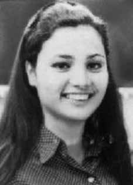

Marilena
Villas
Boas
Pinto
CIRCUNSTÂNCIAS DA MORTE
Marilena Villas Boas Pinto morreu em 3 de abril de 1971, em circunstâncias ainda não esclarecidas. Ela teria sido ferida em tiroteio, ocorrido na rua Niquelândia, bairro de Campo Grande, quando se dirigia a um “aparelho” da organização com Mário de Souza Prata. Conforme Informação nº 624/71-G, do CIE, datada de 23 de abril de 1971, Marilena e Mário eram esperados por um grupo de agentes da Brigada Aeroterrestre quando se iniciou o tiroteio: Cerca das 23:00 horas o casal chegou, não em um Volksvagem mas num táxi o que surpreendeu a equipe levando-a mudar o dispositivo para a abordagem da viatura, seus ocupantes percebendo a manobra atiraram contra equipe, Major José Túlio Toja Martins Filho e Capitão Oscar de Souza Parreira, ferindo mortalmente o referido Major no tiroteio, foi morto o terrorista foragido Mário de Souza Prata (Dissidência do PCB da GB) e ferida gravemente vindo a falecer posteriormente Marilena Pinto Carneiro Mendonça (Marilena Pinto Villas Boas) quando solteira.
Ferida, Marilena teria sido levada ao Hospital Central do Exército (HCE), lugar onde morreu algumas horas depois. A notícia do tiroteio e da morte dos militantes só foi divulgada dois meses depois de ocorrido o suposto tiroteio: os jornais O Globo, O Dia e Jornal do Brasil publicaram, em 4 de junho, as manchetes “Terrorista Assassino Foi Morto ao Resistir à Prisão”, “Casal Terrorista Morto ao Resistir à Ordem de Prisão” e “Mortos no Tiroteio Terrorista e a Amante”. As matérias reproduziram na íntegra a versão divulgada pela Secretaria de Segurança Pública do Rio de Janeiro.
Documento confidencial do Cenimar, datado de 7 de janeiro de 1971, e que usa como referência a I/nº 0016 de 5 de janeiro de 1971, também do Cenimar, prova que Marilena já era monitorada pelos órgãos de segurança em janeiro de 1971. A versão da morte de Mário e Marilena foi divulgada pela Informação nº 624/71-G do I Exército, de 23 de abril de 1971, que registra o suposto tiroteio às 23 horas e a morte de Mário e Marilena. O mesmo relato se repete na Informação nº 81/DPPS/RJ do Departamento de Polícia Política e Social, de maio de 1971. Também o Prontuário 5.009 do DOPS apresenta a mesma versão.
No entanto, apesar de tratar-se de uma violenta ação policial, não foi encontrado documento com a perícia do local que comprove o suposto tiroteio na rua Niquelândia. A certidão de óbito de Marilena, assinada pelo médico Rubens Pedro Macuco Janine, em 8 de abril de 1971, registra como causa da morte “ferimento penetrante de tórax com lesões do pulmão direito e hemorragia interna”. Marilena teria morrido no HCE e seu corpo entregue à família, depois de muitas dificuldades, cinco dias depois da data da morte, em caixão lacrado, sendo enterrada no cemitério São Francisco Xavier, no Rio de Janeiro. Durante o enterro, militares à paisana intimidaram familiares e amigos. O depoimento de Inês Etienne Romeu, única sobrevivente da Casa da Morte de Petrópolis, entregue ao Conselho Federal da Ordem dos Advogados do Brasil (OAB) em 5 de setembro de 1979, permitiu esclarecer, em parte, as circunstâncias da morte de Marilena.
De acordo com o testemunho de Inês, ratificado para a CEMDP em abril de 1997, quando estava internada no HCE ouviu de um médico que Marilena teria chegado já sem vida àquele hospital. Mais tarde, o carcereiro da Casa da Morte, “doutor Pepe”, disse a Inês que Marilena ali estivera e que “havia morrido na mesma cama de campanha” que ela ocupava.
Declaro ainda que estive internada no HCE, no Rio de Janeiro-RJ, de 06 a 08/05, que Marilena Villas Boas Pinto havia chegado morta ao HCE; que no dia 08/05, na casa de Petrópolis, o “Dr. Pepe‟ disse que Marilena havia morrido exatamente na mesma cama de campanha onde eu me encontrava, afirmando também que, embora baleada, Marilena tinha sido dura.
O jornalista Elio Gaspari, em seu livro “A ditadura escancarada”, narrou os fatos relacionados à morte de Marilena Villas Boas, conhecida pelos codinomes de Índia, Sílvia e Cândida, e de Mário de Souza Prata, citando o trecho de um documento até então inédito. Segundo essa informação “[…] Marilena Villas Boas Pinto, a Índia do MR-8, foi entregue ao DOI, e é possível que a tenham levado para Petrópolis. Mataram-na com um tiro no pulmão”.
Marilena Villas Boas Pinto died on April 3, 1971, under circumstances that have not yet been clarified. She was reportedly injured in a shootout, which took place on Niquelândia Street, in the Campo Grande neighborhood, when she was heading to an organization “apparatus” with Mário de Souza Prata. According to Information nº 624/71-G, from the CIE, dated April 23, 1971, Marilena and Mário were expected by a group of agents from the Airborne Brigade when the shooting began: Around 11:00 pm the couple arrived, not in a Volkswagen but in a taxi, which surprised the team, leading them to change the device to approach the vehicle, its occupants realizing the maneuver and shot at the team, Major José Túlio Toja Martins Filho and Captain Oscar de Souza Parreira, mortally wounding the aforementioned Major in the shootout, the fugitive terrorist Mário de Souza Prata (GB PCB Dissent) was killed and seriously injured and Marilena Pinto Carneiro Mendonça (Marilena Pinto Villas Boas) later died when single.
Wounded, Marilena was reportedly taken to the Army Central Hospital (HCE), where she died a few hours later. The news of the shooting and the death of the militants was only released two months after the alleged shooting occurred: the newspapers O Globo, O Dia and Jornal do Brasil published, on June 4, the headlines “Terrorist Murderer Was Killed When Resisting Arrest”, “Terrorist Couple Killed When Resisting Arrest Order” and “Killed in the Terrorist Shooting and the Lover”. The articles reproduced in full the version released by the Public Security Secretariat of Rio de Janeiro.
Confidential Cenimar document, dated January 7, 1971, and which uses as a reference I/nº 0016 of January 5, 1971, also from Cenimar, proves that Marilena was already monitored by security agencies in January 1971. The version of Mário and Marilena's death was released by Information nº 624/71-G of the I Army, of April 23, 1971, which records the alleged shooting at 11 pm and the deaths of Mário and Marilena. The same report is repeated in Information No. 81/DPPS/RJ from the Political and Social Police Department, dated May 1971. DOPS Record 5,009 also presents the same version.
However, despite it being a violent police action, no document was found with local expertise proving the alleged shooting on Niquelândia Street. Marilena's death certificate, signed by doctor Rubens Pedro Macuco Janine, on April 8, 1971, records the cause of death as “penetrating chest injury with damage to the right lung and internal bleeding”. Marilena died at HCE and her body was handed over to her family, after many difficulties, five days after the date of death, in a sealed coffin, being buried in the São Francisco Xavier cemetery, in Rio de Janeiro. During the burial, plainclothes soldiers intimidated family and friends. The testimony of Inês Etienne Romeu, the only survivor of the House of Death in Petrópolis, delivered to the Federal Council of the Brazilian Bar Association (OAB) on September 5, 1979, made it possible to clarify, in part, the circumstances of Marilena's death.
According to Inês' testimony, ratified by CEMDP in April 1997, when she was admitted to HCE she heard from a doctor that Marilena had arrived at that hospital already dead. Later, the prison guard at the House of Death, “Doctor Pepe”, told Inês that Marilena had been there and that “she had died in the same camp bed” that she occupied.
I further declare that I was admitted to the HCE, in Rio de Janeiro-RJ, from 06 to 08/05, that Marilena Villas Boas Pinto had arrived dead at the HCE; that on 05/08, at the house in Petrópolis, “Dr. Pepe” said that Marilena had died exactly in the same camp bed where I was, also stating that, although shot, Marilena had been tough.
Journalist Elio Gaspari, in his book “The Open Dictatorship”, narrated the facts related to the death of Marilena Villas Boas, known by the code names India, Sílvia and Cândida, and Mário de Souza Prata, citing an excerpt from a previously unpublished document. According to this information “[…] Marilena Villas Boas Pinto, the Indian woman from MR-8, was handed over to the DOI, and it is possible that they took her to Petrópolis. They killed her with a shot in the lung”.
Marilena Villas Boas Pinto falleció el 3 de abril de 1971, en circunstancias que aún no han sido esclarecidas. Según los informes, resultó herida en un tiroteo ocurrido en la calle Niquelândia, en el barrio de Campo Grande, cuando se dirigía a un “aparato” de la organización junto con Mário de Souza Prata. Según la Información nº 624/71-G, del CIE, del 23 de abril de 1971, Marilena y Mário eran esperados por un grupo de agentes de la Brigada Aerotransportada cuando comenzó el tiroteo: Hacia las 23:00 horas llegó la pareja, no en un Volkswagen sino en un taxi, lo que sorprendió al equipo, llevándolos a cambiar el dispositivo para acercarse al vehículo, sus ocupantes se dieron cuenta de la maniobra y dispararon contra el equipo, el mayor José Túlio Toja Martins Filho. y el Capitán Oscar de Souza Parreira, hiriendo mortalmente al mencionado Mayor en el tiroteo, el terrorista prófugo Mário de Souza Prata (GB PCB Dissent) fue asesinado y gravemente herido y Marilena Pinto Carneiro Mendonça (Marilena Pinto Villas Boas) murió posteriormente cuando estaba soltera.
Herida, Marilena fue trasladada al Hospital Central del Ejército (HCE), donde murió unas horas más tarde. La noticia del tiroteo y de la muerte de los militantes sólo se difundió dos meses después del presunto tiroteo: los periódicos O Globo, O Dia y Jornal do Brasil publicaron, el 4 de junio, los titulares “Terrorista asesino fue asesinado al resistirse al arresto”, “Pareja terrorista muerta al resistirse a la orden de arresto” y “Muerto en el tiroteo terrorista y el amante”. Los artículos reproducen íntegramente la versión difundida por la Secretaría de Seguridad Pública de Río de Janeiro.
Documento confidencial de Cenimar, fechado el 7 de enero de 1971, y que tiene como referencia el I/nº 0016 del 5 de enero de 1971, también de Cenimar, prueba que Marilena ya era vigilada por organismos de seguridad en enero de 1971. La versión de la muerte de Mário y Marilena fue difundida por la Información nº 624/71-G del I Ejército, del 23 de abril de 1971, que registra la presunto tiroteo a las 23 horas y la muerte de Mário y Marilena. El mismo informe se repite en la Información nº 81/DPPS/RJ de la Dirección de Policía Política y Social, de mayo de 1971. El Expediente DOPS 5.009 también presenta la misma versión.
Sin embargo, a pesar de tratarse de una acción policial violenta, no se encontró ningún documento con pericia local que acredite el presunto tiroteo en la calle Niquelândia. El certificado de defunción de Marilena, firmado por el médico Rubens Pedro Macuco Janine, del 8 de abril de 1971, registra como causa de muerte “herida penetrante en el tórax con daño en el pulmón derecho y hemorragia interna”. Marilena murió en el HCE y su cuerpo fue entregado a su familia, después de muchas dificultades, cinco días después de la fecha de su muerte, en un ataúd sellado, siendo enterrado en el cementerio de São Francisco Xavier, en Río de Janeiro. Durante el entierro, soldados vestidos de civil intimidaron a familiares y amigos. El testimonio de Inês Etienne Romeu, única superviviente de la Casa de la Muerte de Petrópolis, entregado al Consejo Federal de la Orden de Abogados de Brasil (OAB) el 5 de septiembre de 1979, permitió esclarecer, en parte, las circunstancias de la muerte de Marilena.
Según el testimonio de Inês, ratificado por el CEMDP en abril de 1997, cuando ingresó en el HCE escuchó por un médico que Marilena había llegado a ese hospital ya muerta. Más tarde, el guardia de la Casa de la Muerte, el “Doctor Pepe”, le dijo a Inês que Marilena había estado allí y que “había muerto en el mismo catre” que ocupaba.
Declaro además que fui internada en el HCE, en Rio de Janeiro-RJ, del 06 al 08/05, que Marilena Villas Boas Pinto había llegado muerta al HCE; que el 08/05, en la casa de Petrópolis, el “Dr. Pepe” dijo que Marilena había muerto exactamente en el mismo catre donde yo estaba, afirmando también que, aunque baleada, Marilena había sido dura.
El periodista Elio Gaspari, en su libro “La Dictadura Abierta”, narró los hechos relacionados con la muerte de Marilena Villas Boas, conocida con los nombres en clave India, Sílvia y Cândida, y Mário de Souza Prata, citando un extracto de un documento inédito. Según esta información “[…] Marilena Villas Boas Pinto, la india del MR-8, fue entregada al DOI, y es posible que la llevaran a Petrópolis, la mataron de un tiro en el pulmón”.